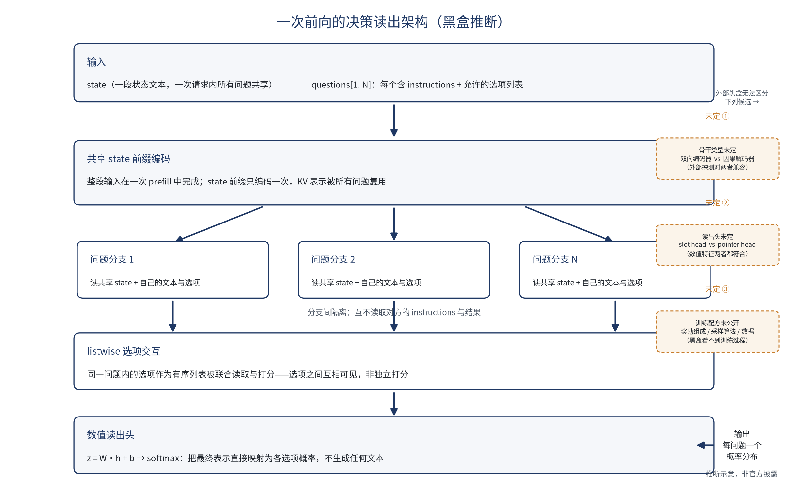
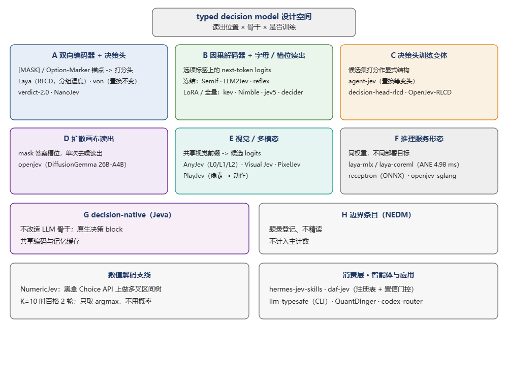
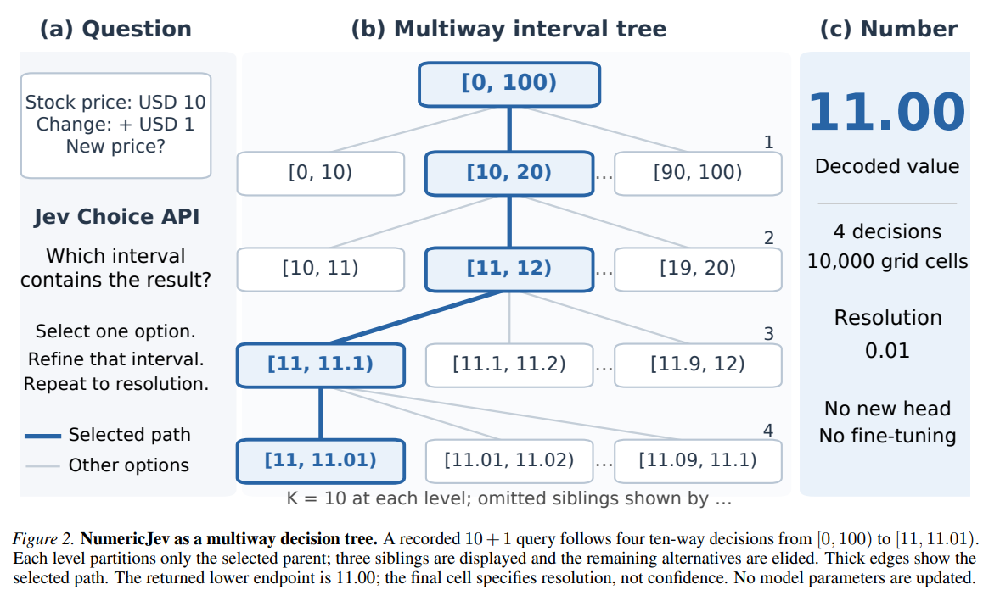
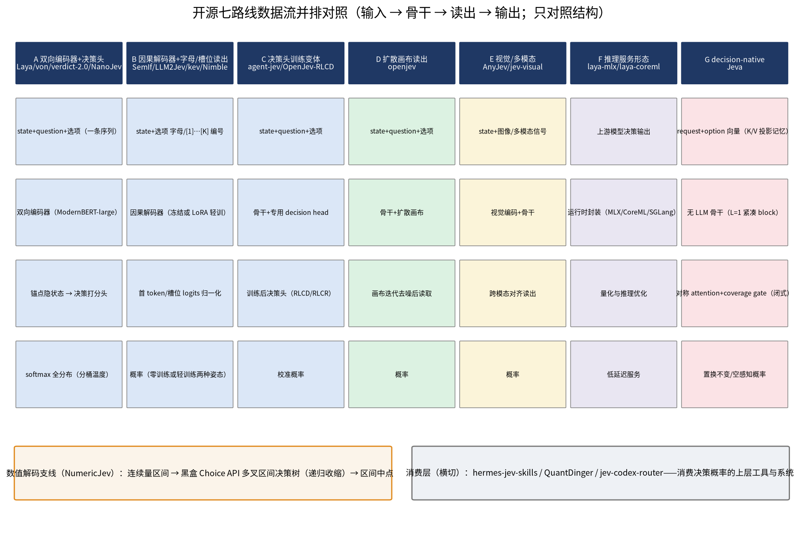
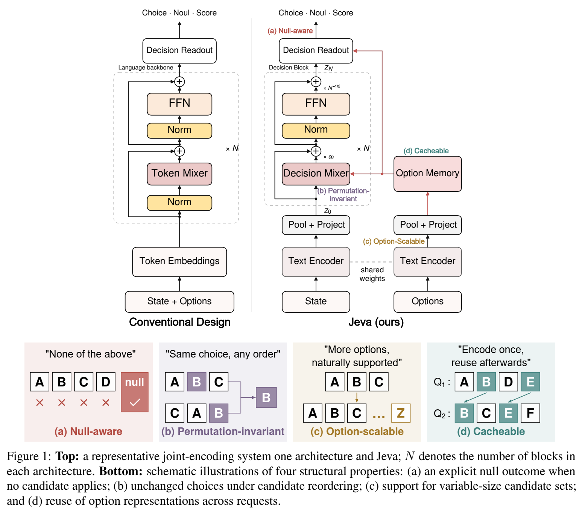

定位：因为Jev是不开源的，但效果与相应计算范式又极具价值，因此不仅催生了大批的开源方案，还因其了外部对Jev内部黑盒的反推猜测。
关于开源方案，这里主要按照“读出位置 / 是否训练 / 校准机制 / 延迟量级”开展讨论现有论文和项目可以分成哪几条架构路线。
5.1、对 Jev 的逆向黑盒重建：Jev 内部形态的外部证据
如上讨论的，官方仅对三种原语、选项基数上限、并行独立评估、延迟/成本等服务侧信息进行了公开，目前全部的公开信息都停留在目标层面：用严格适当评分规则作奖励，让模型报真实概率 —— 包括RLCD的推断也都是外部参照RLCR论文进行的推断。对于如下更关键、更受关注的信息均未进行公开：
骨干网络结构（双向编码器 / 因果解码器 / 扩散骨干 / 参数量 ）；
读出头形态（独立分类头 vs 复用 LM head vs slot head vs pointer head）；
RLCD 的奖励组成、采样算法、数据规模与来源、是否用了人类标签；
confidence 字段的具体计算公式；
两阶段打分的内部实现细节（先独立打分如何再组合为全分布、独立打分阶段是否真的相互独立）；
因此外部一些工作【《Jev's Architecture Unmasked》https://archerhume.com/posts/jevs-architecture-unmasked】通过构造约10000次API调用来制造输入扰动以推断内部结构，整体上可以将实验分为5项：
| # | 实验 | 观察 | 推断 |
|---|---|---|---|
| 1 | 多问题共享 state，改问题顺序与组合 | 延迟与计费符合“state 前缀只编码一次”，加问题不涨成本 | 因果骨干 + 共享 state 前缀 KV + 隔离问题后缀 |
| 2 | 向 Choice 注入无关选项 | 原两选项概率比变化 −0.28（95% CI [−0.36,−0.19]） | 排除“各选项独立 logit”，存在 listwise 选项交互 |
| 3 | 输出数值精度分析 | 概率值符合 z=W·h+b 后 softmax 的数值特征 |
存在数值读出头（slot head 与 pointer head 两候选未定） |
| 4 | 伪造选项边界字符 | 无法伪造选项边界 | 选项分割发生在 tokenizer / 结构层，而非文本层 |
| 5 | 把关键信息放在选项之后（参考卡片） | 16/16 对实验显示模型利用了选项之后的信息 | 读出不是严格“选项处截断”，存在后向信息流 |
实验 1 与官方加问题不会上下文衰减的承诺直接互证——只有当 state 被算一次、多问题在其上分叉，加问题才既不重算 state、又不互相污染；
开源项目 kev 也有提到 "the shared-state trick only needs the KV cache of the state to be computed once and reused across questions"，直接支持了这一推断；
github.com/jaredpalmer/kev；
state 前缀有复用！
实验 2 排除了“每个选项一个独立打分器、互不相关”的推断：
若各选项独立，注入无关选项就不应牵动原选项的概率比，但实证 −0.28 的牵引说明选项间有 listwise 比较；
这实际与官方声明的“两阶段打分先独立、后显式选择”表述相互冲突 —— 要么“独立打分”阶段并不真独立，要么“显式选择”阶段引入了归一化耦合；
目前确定的应该是：Jev 不是“每个选项独立调一次小模型”
实验 5 对因果解码器读出路线是个挑战：如果读出真在选项处截断、后向信息被屏蔽，那么参考卡片实验应失败，但实际试验反而说明：
- Jev 的读出位置比“在
</opt>处停”更靠后——这与 von/agent-jev 把整个前提+所有选项一次编码、再读锚点位置的信息的技术思路更接近，而非 SemIf 式的“读完选项即停”；
读出不是严格选项处截断
- Jev 的读出位置比“在
【图：Jev 内部形态的黑盒逆向重建【图12】】
整体架构应该符合：共享 state 前缀 KV + 隔离问题后缀 + listwise 选项交互 + 常数时间读出（\(z=W·h+b\) → softmax）
实际不能确认：
骨干到底是 BERT 类编码器还是 GPT 类解码器（实验 1 对两者都成立）；
读出头是 slot head 还是 pointer head（实验 3 的数值特征两者都符合）；
RLCD 怎么进的训练循环（外部黑盒看不到训练）；

5.2、开源实现谱系：从冻结读出到评分规则 RL，再到跨领域应用
Jev 发布（2026-09-15）到本报告（材料截止2026-10-19）的一个多月内，开源生态已分化出六条可辨识的架构路线（实际上对决策模型自身来讲，应该是5条）。这里整体按照“读出在哪里、用什么骨干、是否训练”的组织原则对已有工作进行划分：
| 路线 | 读出位置 | 骨干 | 是否训练 | 代表仓库 | 核心优势 | 主要短板 |
|---|---|---|---|---|---|---|
| A 双向编码器+决策头 | 选项锚点 token 隐状态 | 双向编码器（ModernBERT/Qwen3） | 是 | Laya、von、verdict-2.0、NanoJev | 一次前向读完所有选项、无自回归、端侧可跑 | 上下文偏短、高基数（>20 选项）明显弱 |
| B 因果解码器+字母/槽位读出 | 指定位置 next-token logits | 因果 LLM（Qwen3.5/3.8 等） | 混合：零训练 vs LoRA/全参 | SemIf、LLM2Jev、kev、Nimble、jevk5、openthai、reflex、decider | 零架构改动，任何能出 logits 的 LLM 均可 | 4B+ 微调易负迁移；小基座才需微调 |
| C 决策头训练变体 | 候选最后 token 隐向量 | 小模型（0.6B–1.7B） | 是（成本最低） | agent-jev、Astro-Han-RLCD、OpenJev-RLCD | 把校准/置换等变性做成架构属性，单卡可复现 | 均为小基座，规模上限受限 |
| D 扩散画布读出 | 整幅 token 画布去噪 | 离散扩散骨干（DiffusionGemma） | 是 | openjev | 并行去噪、一次前向读出多槽位分布 | 底层机制与官方差异根本；质量=基座质量 |
| E 视觉/多模态 | 视觉特征上的槽位读出 | 多模态骨干（Qwen3-VL 等） | 混合 | AnyJev、jev-visual、Visual Jev、PixelJev、PlayJev | 视觉特征一次编码、多问共享前缀，吞吐极高 | 单图单问时共享反成负担 |
| F 推理服务形态 | 已有权重的工程化部署 | 现成引擎（MLX/CoreML/ONNX/SGLang/vLLM） | —（复用已训权重） | laya-mlx、laya-coreml、receptron、openjev-sglang、open-spark-jev、daf-jev、llm-typesafe | 嵌入主流推理栈、协议收敛、落地门槛低 | 创新最低，聚焦生产而非建模 |
| G decision-native |
专属 L=1 紧凑决策 Block 作为读出模块；不依托 LLM 最后一层输出做打分 | 无 LLM 骨干；共享 Backbone 对请求 request、各个选项 option 做独立编码；选项向量 + 各层 K/V 投影构成可缓存静态记忆 | 整套决策架构原生内置集合条件化、null 感知、置换不变性质，依靠架构命题闭式保证，不依赖多顺序采样、事后聚合去偏；区别于零训练读出，但本文为单团队自研模型，权重未公开 | https://github.com/LiQiiiii/Jeva | 架构原生 | 属于全新 decision-native
范式，生态、落地验证空白； 有效性尚待验证 |
| 支线 数值解码（NumericJev） | 黑箱 Choice 之上的区间搜索树 | 不造模型 | 否 | NumericJev | 把 Choice 原语扩展到连续数值输出 | 精度受外层搜索树约束 |
| 消费层 Agent 集成 | 决策端点接入 agent 工作流 | — | — | hermes-jev-skills、QuantDinger、daf-jev、llm-typesafe | 决策端点成为 agent 运行时原语 | 上线风险在运维（置信门/熔断/授权） |
开源谱系划分示意图：

5.2.1、路线 A：双向编码器 + 决策头
机制：用双向（非自回归）编码器把 state + 问题 + 所有选项打成一条序列，每个选项由一个锚点 token（
[MASK]或 Option-Marker）定位，取该锚点的隐状态过一个小型打分头，softmax 即得全分布。核心优势：双向注意力让每个选项同时看到全文——这是相对因果解码器路线的主要优势：比如“退款请求”的
[MASK]位置能同时看到工单里前后两段互相矛盾的陈述（“被自动续费”与“上个月已取消”），而因果解码器只能向右看，做不到这一点；固有约束：编码器上下文窗口普遍偏短、高基数选项退化；
相关工作对比：
| 仓库 | 骨干 + 决策头 | 是否训练 | 关键指标 | 亮点 / 教训 | 来源 |
|---|---|---|---|---|---|
| Laya | ModernBERT-large（395M）+ 决策头（≈26.5M，合计 421M） | 是（完整公开 RLCD 配方） | T4 延迟：单问英文 39.5ms / 多语 32.8ms； 10 问批量 158.6ms（15.9/q）/ 72.3ms（7.2/q）； 50 问 337ms（6.8/q）。 校准：typed raw ECE 0.213→0.081（温度后）、意图分类 0.206→0.111 |
本路线标杆，且唯一把"怎么做"完整公开：别人只给目标不给方法，它把 Jev 的 RLCD 训练配方（怎么设计奖励、怎么探索）全部开源，别人能照着复现；还老实承认标签很多时表现差（77 类只 0.425） | github.com/NandhaKishorM/laya |
| von | ModernBERT-large（395M）+ Option-Marker 头 | 是（listwise softmax CE + Brier 监督，不走 RL） | JevBench hard（111 题×4 排序）：1.1 翻转 49.5% → 1.2 降到 0%；score
任务翻转熵 0.61→0.00。 延迟 p50 0.096s（4 vCPU Xeon 8488C，OpenVINO）/ 0.023s（A10G） |
解决"选项顺序影响答案"的洁癖方案：改一处结构（选项只看共享前提+自己、位置编号从前提后重数），让"打乱选项"在数学上根本不改变判断——原来一打乱就错一半，现在彻底免疫（顺序不变性） | github.com/wfzyx/von |
| verdict-2.0 | ModernBERT-base（149.6M）+ GLiClass | 是 | 自报 ~20–25ms/决策、浏览器 WebGPU 内 <600MB 推理； flip rate 7.41%（Kev-0.5B）→ 4.76% |
两套头分工管"对不对"和"信不信"（Distribution Head
对齐答案 + Confidence Head
专门管置信度），再用"打乱选项"的对称惩罚把"换个顺序就翻答案"从 7.4% 压到
4.8%； 坑：所有数字都是自己报的、跑在自己整理的数据上、没经第三方复核，要打折看 |
全部数字跑在作者自定义留出集、未经第三方复核；github.com/Heman10x-NGU/openJev-verdict-2.0 |
| NanoJev | Qwen3-0.6B + 三种按统计结构分的决策头 |
是（CE 训练；RLCD 后训练 roadmap 标注） | 证明决策头可以又小又专：用最小 0.6B
模型跑通"按题型分头"（单选/是非/打分各配一个头），一个前向算完全部； 坑：只在游戏（Maze/Snake/ViZDoom）上测过，换到客服/路由场景迁移性要自己验证 |
github.com/TianyuCodings/NanoJev |
路线小结：
路线 A 的共性是一次前向读完所有选项、无自回归解码、端侧可跑；
代价是编码器上下文普遍偏短（Laya 英文 checkpoint 512 token、von 8,192 token），且高基数（>20 选项）时明显偏弱—— 如 Laya 在 Banking77（77 标签）上仅 0.425，远低于 Jev 的 0.870，归因于 head_max_len 的 token 预算使每标签仅 3–4 token；
这暴露了路线 A 的根本问题：双向编码器单次前向读完全部选项，在低延迟场景优势明显；但选项数增多时，每个选项分到的上下文预算即被摊薄。
5.2.2、路线 B：因果解码器 + 字母/槽位读出
机制：保留因果（自回归）语言模型骨干，不生成文本，而是在指定读出位置取 next-token logits，把选项映射成单 token 标签（字母 A/B/C… 或 1…[K]），在这些标签 id 上做 softmax；
路线特征：“零架构改动”——任何能出 next-token logits 的 LLM 都能当决策端点，这也是生态里分支最多、与 SemIf 名字绑定最深的路线；
进一步按照是否进行训练，可以分为 零训练读出类（SemIf / reflex / LLM2Jev）与 LoRA/全参微调类（kev / Nimble / jevk5 / decider）；
仓库对比：
| 仓库 | 骨干 + 读出 | 是否训练 | 关键指标 | 亮点 / 教训 | 来源 |
|---|---|---|---|---|---|
| SemIf | 冻结 Qwen3.5-4B，字母读出（首 token 挑 A/B/C softmax） | 否 | 在 RTX 3090（21 条二值判据，median of 3）上：直接读 typed logits 1.023s（0 输出 token） vs 自回归生成 JSON 数组 5.332s（111 token）—— 快 5.21× | "只读不说"比"让它写答案"快 5 倍：完全不用训练，冻结模型直接读分数；同时很诚实——它明确说返回的是"给定选项下的概率"、不是真实置信度，用之前得自己校准 | github.com/TheoLeeCJ/SemIf-OpenJev |
| LLM2Jev | 冻结 Qwen3.5-4B，前缀自由（prefix-free）数字编号（[1]…[K]，后缀 k]） | 否（微调仅对小模型/高基数有 targeted 收益） | 冻结开箱 JevBench 81.4% / ECE 0.057，与同基座微调社区模型打平； 三后端 P50 48ms / P95 346ms（对照 Jev 1.13.0 P50 652ms） |
两个贡献：一是编号办法打破"最多 16 个选项"的天花板（前缀自由编号），任意多选项都能一次打分；二是给给出了见解——4B 以上的大模型不训练就够准，硬微调反而更差 | arXiv:2610.02076 |
| kev | Qwen3.5/3.8 + rank-16 LoRA + 小 pointer head | 是 | H100 上 Kev-4B 6 问短文本 18.1/12.9ms（新文本/缓存后）； 温度 0.8B 2.35 / 4B 2.41 / 9B 2.19 / 27B 1.32 |
全生态最透明的踩坑记录：本想"把多个问题打包成一条、用掩码隔开"省算力，结果发现底层注意力机制（Gated DeltaNet）根本不理会你设的隔离，打包在机制上不成立；只好退回"每问一行、state 缓存复用"，两种做法差距 <4e-6 | github.com/jaredpalmer/kev |
| Nimble | Qwen3.5-9B + LoRA r16，单 token 直接读 logits | 是（CE；创新在数据整编） | H100 中位 106ms（对照同报告 Jev 1.13.0 API 中位 246.7ms）；温度 T=2.179 | 创新在"怎么造训练数据"不在算法：改一个关键事实就让答案翻转、删掉证据就让它"我不知道"，用这套对比式数据训练； 坑：训练算法还是老一套，且"打分"类题型越训越离谱（ECE 反升），被当"全局单一温度对异构负载不够"的反例 |
github.com/bespokelabsai/nimble |
| jevk5 | Qwen3.5-4B/9B + 蒸馏 LoRA，SemIf 式字母 softmax | 是 | H100 短决策 13.2ms（eager ≈70ms）； CUDA graph 预编译 |
选项多就走"分组淘汰赛"（≤16 一次算，>16 分几轮淘汰）；配了双温度修补淘汰造成的失准；坑：两个温度都只在 500 条小数据上拟合、且不敢动最终答案 | github.com/allebee/jevk5 |
| openthai | Qwen3.5-0.8B（手术摘除 vision encoder，LM head 换 256-way slot softmax） | 是（全参重训 slot head） | 训练管线 = 5B 泰语 tokens CPT（≈1 天）+ 决策 SFT（≈0.5 天）+
后校准，1× H100 约 1.5 天完成全流程 |
把整套范式搬去低资源语言（泰语）的完整配方：1 张卡 1.5 天跑完；也是这条路线里少见的"整个脑袋重训"（全参重训 slot head）而不是只加小补丁 | github.com/iapp-technology/openthai-systemone |
| reflex | 冻结 Qwen3.5-4B，靠读出技巧 | 否（核心发现“微调反而是陷阱”） | — | 核心发现：微调反而是坑——花大力气做的 4 套 LoRA + 27B 教师蒸馏，只在"长得像训练数据"的输入上赢，一遇到又长又模糊的真问题就失灵；真正有用的是几个读出技巧（字母化 yes/no、拆"证据/标准"、正反两遍平均） | github.com/kshetrajna12/reflex |
| decider | Qwen3.5 2B/4B/35B-A3B + Gemma-4 12B/31B，slot 读出 + CE | 是 | 现成 instruct 基座 + 拟合温度在 Decision Index 上排 #2/#8 |
"现成模型 + 调个温度"就能上榜，没蒸馏 Jev 任何东西；它提醒大家：动手训练前先证明"微调真比现成模型直接读出更好" | github.com/Mapika/decider |
路线小结【核心是LLM2Jev 2610.02076 的工作，之前有过部分讨论】：
LLM2Jev 论文的实证结论是——4B 级强基座上，冻结读出（81.4%）与微调社区模型打平，全参微调甚至负迁移；只有小基座（0.6B，JevBench 56.7% / Banking77 22.2%）和高基数路由才从微调显著受益（0.6B Banking77 22.2%→59.8%）；
路线 B 特有陷阱（LLM2Jev 揭示的微调过拟合反面教材）：纯意图数据训 4B 模型，在 in-distribution dev loss 从 0.65 单调降到 0.002，但 JevBench 却从 81.4 掉到 76.2——即“分布内 loss 越降越准、分布外越训越差”，这是路线 B 微调方法最需警惕的失败模式！
5.2.3、路线 C：决策头训练变体
机制：不改读出位置的方法论，而是在“怎么给选项集打分”上做文章——把选项间的交互做成显式结构，而非靠数据增强碰运气；
具体仓库情况如下：
| 仓库 | 骨干 + 决策头 | 是否训练 | 关键指标 | 亮点 / 教训 | 来源 |
|---|---|---|---|---|---|
| agent-jev | Qwen3-0.6B（整体移除 LM 头）+ 置换等变候选头 | 是（598M 全参，~1.2GB bf16） | Typed Decisions 官方测试切分 top-1 79.25%（对照 Laya 77.00%、Jev
1.13.0 零样本 72.7%）； 共享前缀 KV 复用，砍掉冗余 backbone token 操作 92.4%（延迟 609.65→298.91ms，约 −51%，最大概率差 0.000508 且答案不变） |
让"选项怎么排列"在数学上彻底不掺进打分（置换等变头），比"训练时打乱选项"更根治；多个问题共用一段计算能省约一半时间；全生态唯一给"比
Laya 高 2.25 个点"配了置信区间
[+0.65,+3.90]，不是空口报数 |
github.com/malevrigns/agent-jev |
| Astro-Han/decision-head-rlcd | Qwen3.5-4B + 4.9M LoRA（rank 8，仅 attention） | 是 | — | 把 RL 当严谨实验做：固定种子、只按"测试数据和训练数据像不像"分组（同集/同结构近料/同结构异料/结构缺失）报告；结论扎心：训练时没见过的结构，RL 不但没帮上忙、还比不训练更差 | github.com/Astro-Han/decision-head-rlcd |
| OpenJev-RLCD | Qwen3-1.7B 两阶段 RLCD | 是 | Cov@5% 从 GRPO 的 19% 提到 81%（相同风险预算下覆盖更多可回答样本）；MMLU-Pro acc 42.3→47.7 | 把 RLCD 拆成两段做（先校准答案、再强化推理过程），同样风险预算下能答对的题明显变多；注意：准确率提升不大，主要改善的是"自信程度/校准" | github.com/ZimmyGao/openjev-rlcd 论文：2609.38850 |
路线小结：
路线 C 的共同信号是 —— 社区已经从“照 Jev 样子训一个”转向“把校准与等变性做成架构属性”；
如 agent-jev 的置换等变头、Astro-Han 的数据覆盖消融、OpenJev-RLCD 的两阶段，都在回答同一个问题：怎么不靠更多数据、而靠结构/算法使概率正确，同时使训练成本也最低！
agent-jev 598M 全参、Astro-Han 4.9M LoRA r8、OpenJev-RLCD Qwen3-1.7B——都在单卡可复现范围内，与路线 B 动辄 4B/9B LoRA 形成对比
5.2.4、路线 D：扩散画布读出
机制：读出对象从“自回归单 token logit”换成离散扩散模型的整幅 token 画布；
- 扩散语言模型一次前向对整幅画布去噪（而非从左到右写），因此可以只把要决策的槽位 mask 掉、一次只读前向就读出每个槽位的分布；
仓库对比表：
| 仓库 | 骨干 | 是否训练 | 关键指标 | 亮点 / 教训 | 来源 |
|---|---|---|---|---|---|
| openjev | DiffusionGemma 26B-A4B（MoE 26B 总参/4B 激活） | 是 | 自报 Server-Timing 单请求 total 44.0ms（仅一次示例读数、非基准分布） | 首个基于扩散语言模型的决策服务器：只 mask 答案槽位、每题一
token，canvas 一次只读前向，每标签 token 归一化概率即答案； 【工程上】完整复刻 Jev 线协议（错误形状 422/400/401/429/529 对照 live API 核对），typesafe-sdk 改 base URL 即可用； 坑：它自己承认答案好不好全看底座模型行不行，要自己评估 |
github.com/razorback16/openjev |
路线小结：
- 这条路线证明“读出位置”不必绑死在自回归 LM head——任何能对指定槽位输出条件分布的生成式骨干，都可以做成决策端点
它与官方 Jev 的机制差异是根本性的：官方是因果前缀+后缀，openjev 是整画布并行去噪；但对外契约层完全一致
5.2.5、路线 E：视觉 / 多模态
机制：把“state”从文本扩展到图像/像素，在共享视觉上下文上做多问题 typed 决策；
它把“共享前缀算一次”的抽象从文本 state 推广到视觉特征。
项目对比：
| 仓库 | 骨干 | 是否训练 | 关键指标 | 亮点 / 教训 | 来源 |
|---|---|---|---|---|---|
| AnyJev | 任意 LLM（实测 Qwen3-8B）+ 分级读出头 |
否（L0/L1 无梯度；L2 闭式解读出头） | Banking77 20-way（300 题）：准确率 0.747→0.807、ECE 0.240→0.095、≤5% 错误下可自动决策比例 7.7%→52.0%；order-flip 率 0.230→0.073 | 最优雅：不用训练——从模型中间层"解一道线性方程"就得到打分头（闭式读出头），再让选项转着圈各看一遍、平均掉位置偏见（K
次旋转去偏）；效果：校准好了，能放心自动拍板的比例从 7.7% 涨到
52% |
论文：2610.00831（Nokia Sunnyvale + 腾讯混元） |
| jev-visual | Qwen3.5-0.8B-4bit（Apple Silicon，MLX） | 否（无训练无校准） | 64 决策独立 vs 共享评分中位 37.30s→2.40s；生成 JSON 在 4/16/64 决策下未通过完整 schema | 只算旁证、不算质量证据：在苹果芯片上只跑到早期 demo（输出的 JSON 格式都不完整），能证明"多个问题共用一次图像特征能省约 15 倍时间"，但别拿它当"效果好不好"的证据 | github.com/hr98w/jev-visual |
| Visual Jev | Qwen3-VL-4B-Instruct | 是（含专用 typed head 对照） | 独立串行 50.7ms/题 → 批量不共享前缀 19.3ms（2.6×）→ 共享前缀+同批 5.7ms/题（176 Q/s，相对串行 8.9×） | 全生态唯一把两个提速来源分开测："一次处理多个问题"和"复用算过的部分"各值多少，结论是两样都得要（正交）；还严谨证明：专门加个打分头并不比直接读模型原分数更准（macro 0.761 vs 0.761） | 论文:2609.25845 |
| PixelJev | Qwen3.5-VL 2B/4B | 混合（frozen / 语言侧 LoRA / held-out 温度校准三阶段分离） | Pets frozen 2B 60.13% → 64-shot adapted 92.40%（+32.3pp） | 把"看图做决定"定义成一套标准合同（图+运行时的选项清单+程序返回稳定 ID）；严谨证明效果提升全来自小适配器（LoRA）、"换读出方式"贡献是 0 | 论文:2609.29283（南大/MSRA） |
| PlayJev | Qwen3.5-0.8B-Base（全量微调 + 3 轮 DAgger，共 2,166,984 条决策） | 是 | H200 上 43ms/步；mean vs teacher 归一化 0.57（10 款 HTML5 游戏） | 最激进：不告诉它游戏名、不喂文字，只看一帧画面就直接输出该按哪个键；但只在 10 款 HTML5 小游戏上测过 | github.com/OmniJev/PlayJev |
路线小结：“共享前缀算一次”在视觉域比文本域更值钱——图像编码是视觉管道里最贵的部分，
- Visual Jev 用“视觉特征只在前三层 image-token 位置重注入、全在缓存前缀内”这一架构事实，把多问共图的吞吐推到 176 Q/s，但在N=1 单图单问时共享反而是负担（82.9 vs 48.1ms）；
是生态里唯一将批量与复用各自的收益分别量化的实验，结论是两者收益正交、需同时采用：
independent serial 50.7ms/题 → 已批量但重算前缀 19.3ms（2.6×，纯批量收益）→ 共享前缀+同批 5.7ms/题（再 3.4×，纯复用收益）
核心：更换骨干提升质量、保留 LM-head 读出、共享执行换取效率
- AnyJev 闭式读出头（路线 E 最优雅机制）：其核心思想是不在骨干上微调，而是取某中间层隐状态、闭式解一个线性读出头 —— 把“训一个 head”变成“解一个线性方程”：
实际很抽象、很理论；
5.2.6、路线 F：推理服务形态【工程化】
定位：这条路线不发明新读出机制，而是把已有的决策权重/读出工程化部署，回答“决策端点怎么上线” —— 工程密度最高、创新最低，但对生产采用最关键；
仓库对比表：
| 仓库 | 部署载体 | 关键指标 | 亮点 / 教训 | 来源 |
|---|---|---|---|---|
| laya-mlx | Laya 权重的 Apple MLX 原生运行时（零 PyTorch） | M3 Max 单短问题 P50：421M 英文 13.42ms、322M 多语 7.39ms； 峰值分配 943.6/687.6 MiB |
最值得抄的运维细节——防"过度自信"：上游给的温度会把"硬币两面"都报成"几乎确定"，运行时把它钳回安全区间（[0.5,5.0]），还逐个警告你每个被钳的桶 | github.com/mizorewww/laya-mlx |
| laya-coreml | Laya 的 Core ML / Neural Engine 端口 | M3 Max 单短多语 P50 4.98ms / P95 5.31ms；每决策系统能耗 0.154J（较编译 MLX FP16 好 2.78×） | 在苹果神经引擎上又快又省电（每个决策能耗好 2.78 倍）；坑：硬件只认 96 个 token，长文要 91.7ms——作者自己用反例说明"短文的快别外推" | github.com/mizorewww/laya-coreml |
| receptron/laya | 单个 ONNX 图，Node.js/TypeScript 直接 import（零 Python） | Apple-silicon CPU 三问题热身后约 140ms | 导成一个文件、Node.js 直接用、不用 Python；导出时打印"和原版差约 1e-5"当作转换质量的签名，输出和 Python 版四位小数一致 | github.com/receptron/laya |
| openjev-sglang | Qwen3.6-35B-A3B 跑 SGLang 0.5.19 Rust 前端、单容器一张 B200 prefill-only 端点 | — | 已是历史：README 顶部自己写明这是早期实验、已被 SGLang 官方原生决策端点取代，只当参考 | github.com/ekzhang/openjev-sglang |
| open-spark-jev | DGX Spark 完整栈（数据工厂 → SFT → NVFP4 量化 → 本地 API），Qwen3.5-4B+LoRA | vLLM bf16 p50 74.9ms、NVFP4 53.3ms | 诚实负面样本：自己试了两种 RLCD 路线、两次都变差、没好意思发模型——说明"RLCD 复现还没稳定赚钱" | github.com/abhishek085/open-spark-jev |
| daf-jev | 应用侧适配层：wire 合同 + provider 注册表（jev/jeff/kev/localjev/openthai-systemone/openrouter） | — | "接线"样板：一个标准接口背后可以接 Jev/kev 等好几个后端，自带置信门槛、熔断这些生产保护；也揭开了生态里各种别名到底是哪个 | github.com/docxology/daf-jev |
| llm-typesafe | Simon Willison 的 llm CLI 单文件插件 | — | 最省事的上手方式：一个单文件插件，让 llm 命令行工具直接用上 Jev | github.com/simonw/llm-typesafe |
总结&评论：
先看一个事实：openjev、LLM2Jev、openjev-sglang、laya、kev、von、openthai、open-spark-jev 都实现
/v1/systemone兼容——Jev 的 API 形状可能比 Jev 本身更长寿；因此，一个新模型只要吐同形状 JSON 就能顶替，这意味着生态的竞争点正在从 谁更准 转向 谁能把这个契约跑在最省的硬件上；
目前看服务路线收敛方向为：把读出嵌进现有推理栈而非另起炉灶
如 laya-mlx / laya-coreml / receptron 把 Laya 分别装进 Apple MLX、Core ML/ANE、ONNX（同一个 395M 编码器权重在 GPU/神经引擎/CPU 三种后端上跑）
如 openjev-sglang 把 Qwen3.6-35B-A3B 挂上 SGLang 的 radix 缓存与 CUDA graph（后被官方 decisions 端点吸收）；
意义：
这意味着 typed decision 不再需要专用 serving 框架，主流 LLM 推理引擎（SGLang/vLLM/MLX/CoreML）都已开始原生支持 prefill-only 读出——门槛从“造一个模型”降到“在已有引擎上读 logits”；
laya-mlx 的温度钳制（[0.5,5.0] 防自欺）是这条路线最值得借鉴的运维细节！
5.2.7、其他支线：数值解码（NumericJev）
背景：Choice 接口只暴露离散类别，不能以指定精度直接输出任意数值 —— 这是这一方向的核心动机，要解决的问题是将离散类型的决策扩展到连续类型上！
典型工作：NumericJev（2609.28587，东京大学）
核心方法：
核心思路是将数值定位视为一系列区间决策问题，然后通过构建多路决策树，在保留原始问题上下文的前提下，递归缩窄数值所在的区间；
具体来讲：

初始化：将用户指定的范围 [L,U) 按分辨率 ϵ 离散为 \(N=(U−L)/ϵ\) 个单元格，索引区间为 [0,N)；
多路细化：在每一层，将当前索引区间划分为至多 K 个子区间，构造自然语言描述的候选区间，调用 Jev-like 接口选择包含目标的子区间；
终止：当区间长度为 1 时，返回该单元格的下端点 \(\hat{y}=L+ϵa\)；
该算法无需模型训练、无需访问隐藏状态，仅利用现有的结构化选择端点；
5.2.8、数据面横切：训练数据与配方生态
在读出路线之外，真正拉开各个方案差距的往往是标签从哪来。把主要各仓的数据做法横切出来，能看到三条数据哲学：
结论：数据组成 > 训练时长，任务结构匹配 > 表层词汇重叠【LLM2Jev证实】；
就可信度上来讲：最诚实的仓库都在主动公布失败与反例，可信度最低的仓库（metask-jev 2星、verdict-2.0）在自定义留出集上产出数字、对照基线引自他人套件！
选择实现时，其是否主动公布失败案例比是否宣称 SOTA 更能反映可信度
| 仓库 | 标签来源 | 训练成本 | 诚实度信号 |
|---|---|---|---|
| Laya | 自报合成 + 真实客服分布混合； RLCD 奖励不依赖人工标签； |
RLCD 配方完整开源 | 明确报 Banking77 高基数失败（0.425） |
| Kev | 4B 完整训练约 $1（H100） | LoRA r16 | 工程教训（Gated DeltaNet 掩码泄漏） |
| Nimble | 对比式数据整编：改焦点事实翻转标签、删证据变不可知，去重后 2676个样本训练，324个样本留出 | LoRA r16，9B | 双集预注册协议拟合温度，主动声明 Score 题型 ECE 反升 |
| jevk5 | 蒸馏（教师生成标签） | 4B/9B LoRA | 上独立 JevBench 板（v0.2 读数时点列第 2/76 系统；2026-10-05 v1.4.2.2 榜快照 JevK5 v0.2.0 列第 5、62.04 分，见 §8.1.1），密封 308 题上未胜出（33.1 vs Jev 36.7）也公布了 |
| LLM2Jev | 全部公开人工标注集（不用教师合成标签），13-gram 污染去重 | 4×A100，Reason-9k 约 41 分钟 | 主动说明“纯意图数据训整 epoch 反而 81.4→76.2”的过拟合反面教材 |
| open-spark-jev | 自建数据工厂 | DGX Spark |
两条 RLCD 实验均变差、未发布 checkpoint |
| agent-jev | 合成（Qwen 系教师 + 规则） | 598M 全参 | 配 case 级 bootstrap 95% CI，为既有 37 仓中唯一：对 Laya +2.25pp |
| reflex | 不训练，靠读出技巧 | $0 | 负面发现（4 套 LoRA + 27B 教师蒸馏只在分布内赢）当主要优势 |
5.2.9、下游应用：Agent 怎么调这些决策端点
定位：读出路线（A–E）与服务路线（F）之外，还有一层 怎么把决策端点接进 agent 工作流的消费层 —— 它不发明模型，但决定 typed decision 能不能真用起来；
仓库信息：
| 仓库 | 用途 | 关键信息 | 来源 |
|---|---|---|---|
| hermes-jev-skills | 将 Jev 封装为 agent skills，让 agent 在分支点调 typed decision
而非自由文本 |
MIT，1,013星，9 天 +25%（消费层增长最快） 把 Jev 包成 agent 的"技能"：让 agent 在岔路口调用它做判断、而不是自己乱写文本；是消费层里涨得最快的 |
github.com/kerpopule/hermes-jev-skills |
| QuantDinger | 交易操作系统，将 Jev 接入 live/paper trading | Apache-2.0 后端，12,435星（stars 最高的 Jev 集成项目，非复现模型）；专设 legal notice 节声明不提供投资建议、live trading 默认 paper-only 需双重授权 | github.com/OpenByteInc/QuantDinger |
| llm-typesafe | llm CLI 单文件插件 |
Apache-2.0，19★，最轻入口 | github.com/simonw/llm-typesafe |
| daf-jev | provider 注册表 + confidence gate + 熔断 + 贝叶斯网 | MIT，6★，“多后端路由”样板 | github.com/docxology/daf-jev |
| jev-codex-router | 将 Jev 作为 agent 路由后端 | 该尝试已被 owner 放弃维护 | 官方 |
- 小结：决策端点正在从“研究玩具”变成 agent 运行时的一个原语——但接进生产前要解决confidence gate、熔断、授权、paper-only 这些运维问题，而不是模型本身！
5.3、各实现路线的对比
官方 Jev 契约白盒、架构黑盒：对外仅暴露 HTTP+JSON 的 Choice/Score/Noul 形状，骨干、读出头、confidence 公式全未公开；
【Archer Hume《Jev's Architecture Unmasked》】约一万次的调用仅能确定性的逆向出“因果骨干 + 共享 state 前缀 KV + listwise 选项交互 + 常数时间数值读出”的判断；
训练走 RLCD —— 以严格适当评分规则为奖励让模型报真实概率，但奖励组成、采样算法、数据规模全部未公开 —— 尽管恰当性评分规则相关理论已经被研究的很透彻，但怎么用起来还不明确；
关于开源方案的复现，在复现判别式决策能力的同时，更多关注的是一些边界问题：生产级稳定、成本与并发、审计与校准！
如下按照核心架构的维度，对这些路线进行对比【注意，各个标准与测试条件不一致，相互比较无意义】：
| 路线 | 代表实现 | 读出位置 | 是否训练 | 校准机制 | 延迟量级（自报硬件） | 生态代表 stars |
|---|---|---|---|---|---|---|
| 官方黑盒 | Jev API | 未公开（逆向：数值读出头） |
RLCD（配方未公开） | RLCD（闭源）；confidence 公式未公开 | 70–500ms（官方）；第三方 p50 ~236–276ms | — |
| A 双向编码器+头 | Laya / von / verdict | [MASK]/Option-Marker 锚点隐状态 → 打分头 |
RLCD（Laya）/ CE+Brier（von） | 按(题型×选项数)温度桶 + 直方图分箱（Laya）； 条件温度（von） |
T4 单问 33–40ms；M3 Max MLX 7.4–13.4ms； ANE 4.98ms |
31k / 839 / 293 |
| B 解码器+字母读出 | SemIf / LLM2Jev / kev / jevk5 | 下一 token 位置的选项字母/数字 id logits softmax | 零训练（SemIf/LLM2Jev/reflex）/ LoRA（kev/Nimble/jevk5） | 每负载/每 checkpoint 温度；SemIf 自认 uncalibrated | RTX3090 1.023s(21判据)； H100 Kev-4B 12.9–18.1ms； H100 jevk5 13.2ms |
4.7k / 392 / 8.4k / 135 |
| C 决策头变体 | agent-jev / Astro-Han | 候选末 token 隐状态 → 置换等变/RLCD 头 | 软CE+0.1Brier（agent-jev）/ RLCD（Astro） | 每原语正标量温度（agent-jev） | ~60–70ms/5问；宽候选共享前缀 299ms | 338 / 6 |
| D 扩散画布 | openjev (DiffusionGemma) | mask 答案槽的画布去噪分布 | 零训练（服务层） | 1−H(p)/ln K（模型自身分布） | 示例 44ms（单次读数） | 601 |
| E 视觉/多模态 | AnyJev / Visual Jev / PixelJev / PlayJev | 共享视觉前缀 + 候选 token logits / 像素→动作概率 | 零标签 L0 / 闭式头 L2（AnyJev）；LoRA（PixelJev）；SFT+DAgger（PlayJev） | 百级标签温度（AnyJev L1）；held-out 温度（PixelJev） | RTX5090 共享批 5.7ms/题（Visual Jev）； H200 PlayJev 43ms/步 |
1k / 48 |
| F 服务形态 | laya-mlx/coreml / openjev-sglang / receptron | 复用上游权重读出，无新机制 | 不训练（运行时） | 继承上游温度（laya-mlx 钳制[0.5,5]） | ANE 4.98ms；ONNX Node ~140ms(CPU) |
6.8k / 1.5k / 337 / 770 |
| 数值解码 | NumericJev | 黑箱 Choice API 叠多叉区间树 | 不训练（算法层） | 不用概率，只取 argmax 区间 | 100格 K=10 仅 2 轮决策 |
5.3.1、各路线数据架构流图与适用
如下为开源七路线数据流并排对照图（输入 → 骨干 → 读出 → 输出）：

各个路线的适用边界如下所示：
| 路线 | 最适合 | 不适合 | 关键约束 |
|---|---|---|---|
| A 双向编码器 | 端侧/低延迟、上下文短（≤8k）、选项数 ≤20 | 长上下文、高基数（>26 选项；26 = 英文字母数，SemIf 单 token 字母读出的上限） | 选项多则每选项 token 预算被摊薄（Laya 77-way 仅 0.425） |
| B 字母读出 | 希望零成本先行验证、复用现有 LLM | >26 选项（字母上限，26 = 英文字母数）、要校准概率 | 字母单 token 约束；SemIf 自认 uncalibrated |
| B 前缀自由（LLM2Jev） | 高基数（77/151-way）、想新基座即插即用 | 要精确校准（强基座微调反而负迁移） | trie 切词引入新偏置（MMLU-Pro 选项 10 被赶到选项 1） |
| C 决策头变体 | 要架构级顺序不变、宽候选 | 要快速上手（需重训小模型） | agent-jev 598M 全参；Astro 数据覆盖敏感 |
| D 扩散画布 | 想验证非自回归读出可行性 |
生产（质量未达官方） |
DiffusionGemma 26B-A4B 质量须自评 |
| E 视觉/多模态 | 同图多问、UI 选择、GUI agent |
单图单问低延迟（共享反成负担） | Visual Jev 5.7ms/q 是 amortized 吞吐非独立延迟 |
| F 服务形态 | 已有权重、要上线 | 想改读出机制 | 继承上游所有校准/质量局限 |
结合架构与适用边界来看比较典型的两个路线：
路线 A 用 ModernBERT-large 双向编码器（395M）把 state+问题+所有选项打成一条序列，每个选项由
[MASK]/Option-Marker 锚点定位，抽锚点隐状态过小型打分头 softmax；一次前向读完全部选项、无自回归解码 ——训练分支1：Laya 走 RLCD（log+0.5·spherical−1.0·RPS 复合奖励、GRPO 组基线、logit 层高斯探索退火）
训练分支2：von 走 listwise softmax CE+Brier 监督、不走 RL，并在编码器内做选项 position id 重启获得顺序不变性；
适用边界：
端侧/低延迟、上下文短（≤8k）、选项数 ≤20；
高基数（>26 选项）时每选项 token 预算被摊薄；
路线 B 保留因果 LLM 骨干、不生成文本，在指定读出位置取 next-token logits，把选项映射成单 token 标签（字母 A/B/C… 或
[1]…[K]前缀自由数字编号）做 softmax；零架构改动，任何能出 next-token logits 的 LLM 都能当决策端点：内部也分为不同路线：SemIf/reflex/LLM2Jev 冻结基座零训练，而kev 加 rank-16 LoRA+pointer head进行训练；
关键见解来自 LLM2Jev 论文，其实证表明 4B 强基座上冻结读出 81.4% 与微调社区模型基本打平，但进行全参微调反而产生了负面效果（JevBench 81.4→76.2、ECE 0.057→0.116），仅小基座（0.6B Banking77 22.2%→59.8%）与高基数路由能从微调显著受益；
适用边界：
希望零成本先行验证、复用现有 LLM；
字母读出受 26 选项上限（LLM2Jev prefix-free 打破到 77/151-way）；
SemIf 自认 uncalibrated，须在自己负载上校准；
5.3.2、对架构原生路线的单独说明（G）
上图列出了7条路线，比5.2的详细介绍多了个架构原生的路线，该方案（Jeva）与其他路线不同：
论文：https://arxiv.org/pdf/2610.18773 《Jeva: System One Models from First Principles》
其他路线有一个共同前提：先有一个 LLM/BERT 骨干，再在上面叠加读出/校准/服务工序；
拿一个现成 LLM（比如 Qwen、Llama）作为骨干；
决策问题：给定一条请求
request+ 候选选项集合{option₁,option₂,…,option_K}；把问题序列化塞进 LLM（prompt 拼接、把选项排成文本列表）；
再加一层后处理工序：打分读出、偏好校准、多顺序投票 / 平均、reflex 双向顺序平均、旋转去偏（AnyJev L0）等；
而该方案则不改造 LLM、也不借 LLM 骨干，而是从第一性原理原生设计决策模型，从而在架构层面闭式满足四条公理：置换不变、选项可扩展、null-aware、可缓存；
具体来讲，其出发点基本直击现有主流设计（先将请求与所有候选选项拼接为单一文本序列，再通过语言模型的自回归 logits 或专用预测头读取决策）的痛点：
缺乏空感知（Null-aware）：
模型无法明确区分“没有候选答案适用”与“在现有候选中难以抉择”；
仅对候选分数做归一化（如 softmax）无法判断答案是否真正存在；
违反排列不变性（Permutation-invariant）：
- 决策本应不依赖于候选的呈现顺序，但序列化输入使模型受到位置偏差影响，改变选项顺序可能导致预测翻转；
LLM 天生是序列生成模型，它对顺序敏感！因此换选项顺序，LLM 的输出偏好可能翻转（decision flip，决策翻转）；
选项可扩展性不足（Option-scalable）：
- 基于固定答案符号表或特定输出头的设计，使得增加候选数量时必须重新定义输出空间，难以自然支持可变大小的候选集；
计算不可复用（Cacheable）：
- 候选内容（如工具描述、文档、标签）往往在跨请求中重复出现，但联合编码将可复用的候选表示与请求特定计算耦合，导致每次重组候选集或更换请求都需重新编码全部上下文；
因此，Jeva 提出了原生决策模型架构要同时满足的 4 个硬性性质：
Permutation-invariant 置换不变：选项打乱顺序，最终选择 / 概率分布不变，不能出现换顺序就换答案（0 flip 就是这个指标）；
Option-scalable 选项可扩：候选数量 K 可以是 2、16、2048、上万，输出空间不用重新定义，不用重新训练；
Null-aware 空感知：区分“候选中有答案、只是不确定”vs“候选里没有答案，应该 abstain（弃权，Noul 输出）”；
Cacheable 可缓存：选项向量是请求无关的、不变的，同一个 option 可以提前编码缓存，多个不同 request 复用这套 option embedding，大幅降延迟；
基于此论文提出了原生架构，但实验与数据并未交叉验证过，目前仅做参考：

5.3.3、架构解读与差异
将开源路线与5.1的逆向结果进行对照，可以提炼出多条核心机制差异，分为六个核心维度：选项序敏感性与去偏方案、共享状态 / KV 缓存实现、读出位置与能力瓶颈、概率校准范式、“输出免费” 的工程内涵、黑盒 / 白盒路线分工。另外由于零训练方案的特殊性，这里会单独对零训练读出的三个分支进行对照。
【概览表如下】
| 对比维度 | 核心现象 | 分支 / 方案划分 | 关键结论与备注 |
|---|---|---|---|
| 选项顺序敏感性 & 去偏 | 原生 LLM 对候选顺序敏感，会出现决策翻转； 官方 Jev 自带 listwise 选项交互； |
- 后处理去偏：SemIf、AnyJev L0、jevk5、reflex - 架构级置换不变：von1.2、agent-jev |
后处理需要多次
prefill； 架构方案单次前向，但改动侵入模型结构； |
| 共享 State / KV 复用 | 统一目标： - 共享前提表征、减少重复编码； - 底层载体随模型范式变化 |
官方 Jev、agent-jev、Visual Jev、kev、openjev-sglang | 是 “并行独立评估” 的工程落地； kev 因掩码问题退回到逐行编码； |
| 读出位置 & 性能瓶颈 | 新增读出 head 带来的增益有限，基座与数据才是主变量 | LLM2Jev 对照实验，路线 A（重训编码器）、路线 B（冻结解码器） | 微调不一定正向，reflex 发现微调存在性能陷阱 |
| 概率校准 | 原始读出概率天然不可信，校准必须独立环节 | RLCD 系（官方、Laya）、分桶温度系（Laya、jevk5、Nimble）、SemIf 无校准 | 全局单一温度不适合异构任务； 不存在免费的校准置信度； |
| “输出免费” 工程含义 | 读出为常数时间； 自回归生成开销巨大 |
统一共识：决策端点禁止生成 token | System One（读出决策）和 System Two（生成）的成本分界线 |
| 黑盒 vs 白盒路线 | 黑盒侧重生产并发延迟； 白盒侧重可审计可控 |
官方 Jev（黑盒）、全部开源谱系（白盒） | 读出机制逐渐开源，黑盒壁垒转移到 RLCD 配方、训练数据 |
| 零训练读出（不动权重） | 三类零训练读出各有取舍，支持组合使用 | SemIf、LLM2Jev、AnyJev L0 | 低成本验证首选； 候选规模、去偏能力、计算开销三者权衡； |
（1）选项隔离 vs 乱序敏感：两种去偏范式
逆向分析显示，官方 Jev 原生存在 listwise 选项交互：即无关选项的注入会改变原有选项之间的概率比值，选项之间相互作用、互相影响打分。
开源社区对此分化为两条技术路线，目标一致（消除选项顺序带来的决策翻转），但代价完全不同：
后处理去偏路线：接受底层模型天然的乱序敏感特性，通过多次推理、重排候选顺序再聚合结果抵消偏差
代表方案包括 SemIf 旋转、AnyJev K 次循环旋转（L0）、jevk5 淘汰制、reflex 双顺序平均；
其中 AnyJev L0 原生需要 K 次 prefill，依靠 adaptive_shifts 把平均轮次从 18 次压缩至 7.2 次，在 vLLM 上实现 2.2× 决策吞吐提升【见论文 2610.00831】。
架构级保证路线：修改模型结构，从数学层面实现置换不变 / 置换等变，单次前向即可规避顺序偏差。
- 代表为 von 1.2（选项 token 仅关注前提与自身、重置 position id，乱序翻转率由 49.5% 降至 0%）、agent-jev（置换等变候选头）；
（2）共享 State 的实现：工程实现收敛，载体不同
官方方案的共享逻辑是复用 state 前缀 KV 缓存；各类开源实现虽然底层载体不一样，但在设计目标上也都高度收敛：状态只计算一次，供多个查询分支复用，这也是官方 “并行独立评估” 能力在开源工程上的落地形式。
具体来讲：
解码器架构（causal LLM）：依靠 KV Cache 复用；
双向编码器：依靠单次前向得到共享表征；
扩散类方案：画布只读复用。
典型实例：kev（state KV 缓存复用，因 Gated DeltaNet 掩码泄漏回退至逐行编码）、agent-jev（共享前缀减少 92.4% 冗余 token）、Visual Jev（共享视觉前缀，吞吐提升 8.9 倍）、openjev-sglang（radix 缓存预热）；
（3）读出位置决定能力上限：基座与数据优先于新增 Head
LLM2Jev 的受控实验给出了一个反直觉的结论：在 4B 强基座上，新增自定义候选头、指针头或者维持原生字母读出，在 JevBench 上的性能差距很小；冻结式字母读出 81.4%，和微调社区模型的成绩基本持平。真正约束决策准确率的是基座规模、训练数据组成，而不是新增读出头结构。
该结论解释了路线 A（重训编码器）与路线 B（冻结 / 轻训解码器）在基准上经常互有胜负、反复打平，同时印证 reflex 提出的负面结论：盲目做微调反而容易落入性能陷阱【见论文 2610.02076】。
（4）校准是显式工程，不存在天然校准读出概率
所有路线基本达成一个共识：读出得到的原始概率不能直接等同于可靠置信度，校准必须作为独立环节显式处理，而不是训练动力学或者调整温度系数就能免费获得。
具体做法上：
官方 RLCD：将校准目标直接写入奖励函数，完整配方未公开；
Laya / OpenJev-RLCD：对齐 RLCD 的训练范式做复现；
kev、Nimble、jevk5、agent-jev、PixelJev：基于留出集做温度缩放；
- 社区普遍观察到单一全局温度无法适配异构任务负载：比如 Nimble 在部分题型上 ECE 反而上升；Laya 采用“题型 × 选项数量”分桶温度；jevk5 使用双温度机制；
SemIf：明确标注读出概率不可直接作为决策置信度（uncalibrated）；
总结来讲，没有哪个方案宣称读出输出天然经过校准，这是 第3章 底层机制在架构层面的直接体现。
（5）“输出免费”：不只是定价策略，是架构边界
单从输出Token免费来看，似乎是商业成本问题。但更深层次的本质是技术架构问题：即决策读出属于常数时间操作 —— 这实际是模型与技术架构的外在工程化与商业化体现。
上述的六条路线基本共享一条规律：决策端点不做自回归文本生成。
生成哪怕一个 token 都会带来显著开销，社区对照数据可见：SemIf 的 JSON 生成路径耗时 5.332s，而读出路径仅 1.023s，生成式路径被各个方案视作低效基线；
这实际是 System One 快速决策与 System Two 慢速生成在工程成本上的分界线；
（6）黑盒与白盒：工程化选型与商业化的方案差异
官方 Jev：黑盒服务，架构、训练配方、置信度公式均不公开；但核心优势为低延迟（70–500ms）、生产级并发能力；
开源谱系：白盒方案，权重、读出逻辑、校准流程完全可审计；但代价是每个实现通常只覆盖官方契约的一个子集。
在产品化/商业化选型上：
如果追求短期分工稳定：侧重生产稳定性、高并发选择黑盒；需要自主掌控数据、校准策略、硬件部署的选择白盒；
但目前边界正在松动：SGLang 官方 decisions 端点、vLLM prefill-only 栈开始原生支持白盒读出，黑盒差异化壁垒正在从 “读出机制” 转向封闭的训练数据、RLCD 奖励配方；
（7）【扩展】零训练读出路线的三分支对照
上述提到的 SemIf、LLM2Jev、AnyJev L0 都属于零训练读出路线，差异仅在修改读出逻辑或后处理逻辑，不更新模型权重。但三者的适用边界不同，可以互相叠加组合（AnyJev 原文指出 L0 旋转去偏可以和 LLM2Jev listwise 打分结合）：
SemIf：落地最简单；上限受字母集约束（16/26 候选）；
LLM2Jev：突破候选上限（77/151-way），且 listwise 联合打分在 External macro 上相比逐选项字母 logit 提升 + 3.2 点（p<10⁻¹²）；
AnyJev L0：主打顺序去偏，但代价是多次 prefill 推理；
落地建议：已有 Qwen 基座、想要低成本验证 typed decision 的使用者，可以优先从该分支起步，先用 SemIf/LLM2Jev 验证可行性，再根据短板评估是否升级到 A/C 路线的重训方案。
5.3.4、架构层开放问题
综合本章全部证据，仍存在若干机制层面尚无确定结论的开放问题，逐一整理如下：
K≤255 两阶段打分的内部实现未知
官方仅描述流程为“先独立打分、再显式选择”，但逆向实验 2 观测到选项间存在 listwise 交互，即注入无关选项会改变原有选项概率比（偏移 −0.28）；
若第一阶段确实是独立打分，第二阶段 “显式选择” 以何种方式引入耦合尚不明确：是归一化带来的隐式耦合，还是存在专门的交互层？
当前证据不足，有待官方披露或更高精度的逆向探测
listwise 交互与“并行独立评估”的实现边界尚不清晰
官方承诺 “新增查询不会引发上下文污染（问题间独立）”，但同时选项之间存在 listwise 相互牵引；
二者在逻辑上并不冲突：问题之间独立，选项之间可以存在交互；但问题是在两阶段打分中 listwise 交互具体发生在哪一层，开源侧尚未复现官方 K≤255 高基数原生路径；
jevk5 分组淘汰、LLM2Jev 的 prefix-free trie 都属于外部近似方案，并非对官方链路的完整复刻
专用 decision head 是否优于原生 LM-head 读出，收益边界仍存疑问
Visual Jev（论文 2609.25845 ）对照实验显示 typed head 不存在一致准确率优势【并不稳定】；
LLM2Jev（论文 2610.02076 ）在 4B 基座上验证：增加自定义读出头无法稳定提升指标；
而 agent-jev 的置换等变候选头在 Typed Decisions 任务上带来 + 2.25pp 提升（带置信区间）；
多方研究共同指向：在强基座上，专用 head 通常不提升准确率，其价值在于引入置换等变性、改善校准稳健性，增益落在鲁棒性维度而非精度；
Gated DeltaNet 循环层如何实现查询隔离有待验证
kev 在 Qwen3.5/3.8 上实测发现，该循环线性注意力会忽略 attention mask，无法维持多分支隔离，只能退化为逐行编码；
若官方 Jev 采用同类混合线性注意力骨干，如何在复用共享 state 的同时保证不同查询之间严格隔离，目前缺少公开证据，也是因果混合注意力架构落地 typed decision 的已知障碍；
经过校准的概率能否直接支撑全自动决策，存在部署层面风险边界
AnyJev（论文 2610.00831）直接证明：ECE 从 0.240 优化至 0.095 后，在≤5% 错误率约束下可自动决策的占比由 7.7% 提升至 52.0% —— 实际上校准的工程价值，不在于概率数值好看，而在于提升免人工复核的决策占比；
但 Visual Jev、PixelJev 同时也给出警示：输出校准概率不等于 “答案正确概率”，当信息不足时模型依旧可能高置信输出；
直接教训：上线部署需要额外叠加业务侧风险阈值控制，不可直接采信概率；
【汇总表格如下】
| 开放问题 | 核心矛盾 | 已有证据 | 待验证方向 |
|---|---|---|---|
| K≤255 两阶段打分内部实现 | 官方宣称先独立打分，逆向检出 listwise 选项耦合 | 耦合来源未知，无法区分归一化耦合 / 独立交互层 | 细粒度探针逆向、官方技术披露 |
| listwise 交互与并行独立评估边界 | 问题间独立、选项间交互逻辑可共存，但交互层级未知 | jevk5、LLM2Jev 均为外部近似，无官方高基数链路复刻 | 定位 listwise 交互所在层级、复现原生高基数路径 |
| 专用 decision head 收益定位 | 专用头是否稳定优于原生 LM-head 读出 | Visual Jev、LLM2Jev：无准确率增益； agent-jev：提升鲁棒性 / 等变性； |
跨基座、跨任务对照，区分精度、校准、顺序鲁棒性 |
| Gated DeltaNet 循环层查询隔离 | 共享 state 复用和多查询隔离存在冲突 | kev 实测掩码失效，只能逐行编码 | 验证 DeltaNet 类线性注意力的分支隔离方案 |
| 校准概率驱动自动决策的边界 | 校准提升自动决策比例，但置信幻觉风险仍在 | AnyJev
给出自动决策占比提升数据； 多个论文警示不等于正确性概率 |
业务侧风险阈值、条件风险校准工程化 |
5.3.5、总结
| 内容 | |
|---|---|
| 概括 | 官方 Jev：架构黑盒、契约白盒的生产级 typed decision
服务； 开源生态迅速归纳出“读出位置 × 骨干 × 是否训练”三维设计矩阵，矩阵每个格子均存在可运行实现 |
| 三大收敛共识 | - State 只计算一次，多查询分支复用（KV 缓存 / 共享前缀 /
视觉缓存）； - 决策端点不做文本自回归生成，采用常数时间读出； - 概率校准属于独立显式工程，无法天然获得； |
| 三大持续分歧 | - 顺序去偏：后处理多次平均 vs 架构原生置换等变 - 强基座是否需要微调：多数证据倾向不需要 - 专用 decision head 价值：提升准确率，还是仅提升稳健性（主流证据支持后者） |